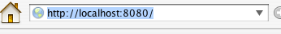
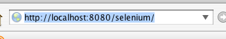

Overview
This page details important information for people developing drivers
for Selenium.
Same Origin Policy
This is a security issue that affects all modern browsers. It is well
described here,
but for our purposes, it constrains the way that a
JavaScript in a browser may interoperate with other open frames and
windows. In short, the Selenium JavaScript app must come from (or
appear to) same origin as the AUT.
The Driver
The driver has a number of duties. These are typically..
- Instantiating the web server with a dynamic app (servlets for
Java)
- Launching a browser with a with a URL that makes sense for
connecting to that server
- providing an API to such that commands can be routed though the
dynamic app to the browser
Local, Remote and URLs
An application may be testable in a remote location by humans, but for
scripted testing and the need for the driver to dynamically drive the
browser, it is optimal for the driver to be on the same machine as that
serving the AUT and the browser testing it.
Thus, an application as deployed ...

... would appear like so for the purposes of testing ...

As with the standalone version of Selenium, there are a number of files
(HTML and JavaScript) that comprise the bulk of the testing framework
and sit in the browser as testing occurs. It makes most sense to put
these in a virtual directory on the same server ...

The dynamic webapp needs to be similarly mounted ...

As the dynamic is the link between what is happening in the browser and
the driving process, it we need to somehow have an instance reference
to it. This is easier in some languages and web servers than
others. Also full programatic start/stop control over the web
server is not always possible for some larger web servers
implementations.
Reply/Request Architecture
Because a browser cannot open a socket and listen on it, we must
effectively initiate communication thru the driver on the browser side.
Ignoring the possibilities granted by keep-alive, we simply poll from
the browser to the server and pick up commands to process inside the
browser. Results of commands are also passed back to the dynamic
hander over the same mechanism. These are in fact done in the same HTTP
request. The results from the previous
command go back as query string parameters, and the next command is communicated in a
text/plain document
The previous/next business introduces some complexity on the driver
side of the design. Namely hidden behind the API, the driver must
manage queues for the outgoing commands and the (some time later)
incoming responses. Java, until 1.5, did not have a blocking
queue to make this easy. Most other languages did.
Selenese
Selenese is the contrived (and mostly hidden) wire language that the
driver uses to speak to the browser-bot through the dynamic
handler. It uses HTTP for its transport, and is quite
simple. Responses come from the browser to the driver in a query
string like commandResult=OK, and commands go from the driver to the
browser-bot in a text/plain document:
| open | /foo/bar.html | |
This two way communication is of course invisible to the observer.
Choregraphy
The driver cleary has some fairly heavy things to do. It is
important for some robustness to be built into the design. For example
it may take a long time for the browser to be instantiated on a
particular platform. It is appropriate for wait timeouts to be
generous here. Similarly whilst issuing individual commands it is
important for the driver to wait a sufficient amount of time for a
command to execute (and its result to come back). For the most
part on a localhost setup, it will be because the AUT is slow, but it
could be because some break in the app means that there will be no
subsequent response. Some timeout regime should be able to
recover from, mark a test as failed (for reasons of timeout), and start
again with the next test.